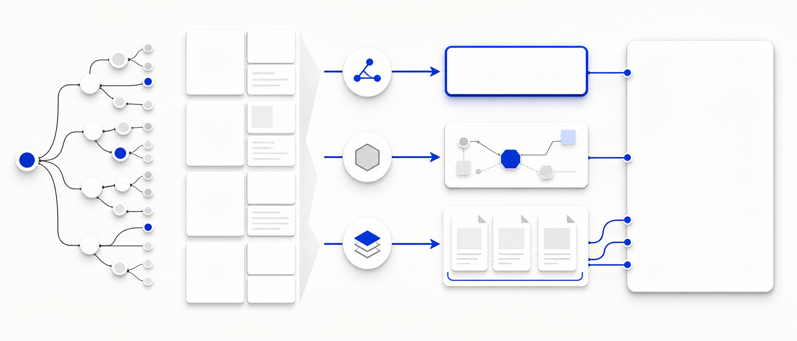

AI 검색 시대의 SEO는 사라지지 않는다. 목표가 검색 결과 노출에서 답변 엔진이 선택하는 근거까지 확장된다.
검색 결과는 링크 목록에서 요약 답변, 출처, 후속 질문, 행동으로 이어지는 인터페이스로 이동하고 있다.
기존 색인·랭킹 최적화는 유지하되, 질의별 답변 블록과 근거 패키지를 운영 단위로 추가한다.
검색 결과에서 발견되고 클릭될 가능성을 높인다.
키워드, 페이지, 내부링크, 색인 상태, SERP feature.
Rank, CTR, organic sessions, conversion.
AI 답변 안에서 언급·인용·추천될 가능성을 높인다.
질문-답변 블록, entity 설명, 근거 단락, structured data.
Citation rate, answer coverage, share of answer.

정의, 조건, 핵심 근거를 먼저 제시한다.
브랜드, 제품, 카테고리 표기를 일관화한다.
수치, 날짜, 방법론, 원문 출처를 가까이에 둔다.
핵심 질의에서 우리 URL이 출처 또는 관련 링크로 등장하는 비율.
질의 맵 기준으로 답변 가능한 콘텐츠가 있는 토픽 비율.
AI 답변에서 브랜드·제품이 정확하고 유리하게 설명되는 정도.
AI 검색 접점 이후 발생하는 직접·간접 전환 기여.
매출·브랜드 방어 질의 20개 선정
상위 SEO 페이지 answer-readiness 감사
답변 블록, FAQ, schema, 근거 패키지 반영
AI citation과 answer coverage 측정 시작
오류·누락 케이스를 SEO backlog에 편입
색인, 기술 SEO, 콘텐츠 품질, 링크 신호는 계속 유지한다.
질문별 answer block, entity consistency, citation monitoring을 운영 기준에 추가한다.
기존 SEO 자산에서 AEO 전환 효율이 가장 높은 페이지부터 점검한다.